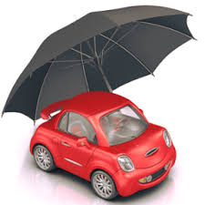

Cubre en caso de fallecimiento o invalidez del asegurado titular de acuerdo a la cobertura contrada por la empresa y detalla en la póliza.
Con este seguro olvídate de la preocupación ante un posible incendio, robo o sismo. Adicionalmente, tienes la opción de contratar seguro CON BONIFICACIÓN, el cual tiene el beneficio de que puedes recuperar hasta el 40% de lo pagado después de 5 años.

Te permite que elijas el producto que más se adapte a tus necesidades en función de cada tipo de Auto y persona: Seguro de Auto USURA, Seguro Auto Senior, SOAP, y Seguro Preciso.